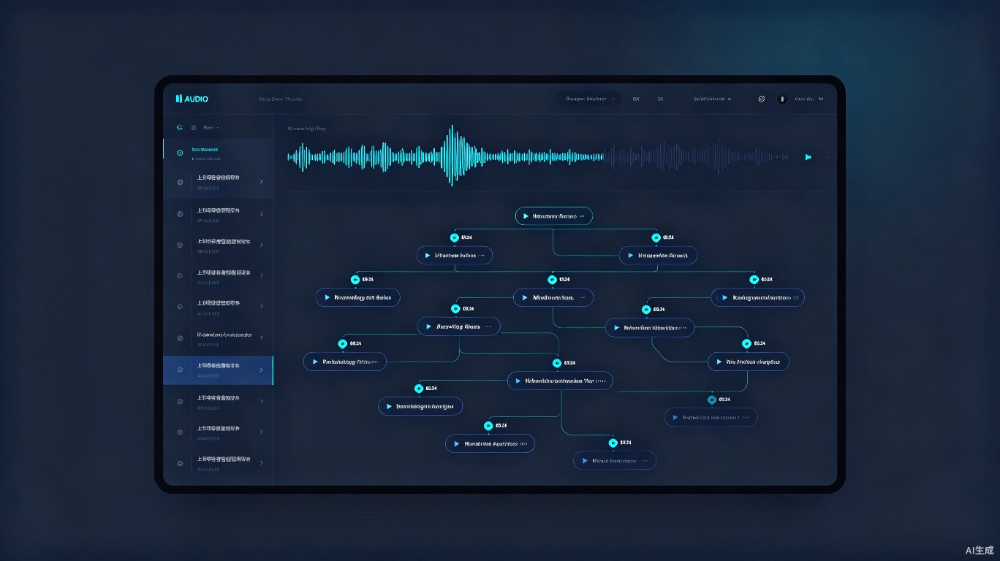

听觉型学习者的 AI 知识锚点系统
将声音的流动，转化为知识的永恒
大量优质知识以音频形式存在——播客、讲座、会议录音——但听觉信息是线性的、易逝的。用户在回听时难以快速定位关键知识点，导致"听完就忘、复习无从下手"。EchoNote 是一款 Web 端 AI 音频笔记工具，可将播客、讲座等音频自动生成带时间戳锚点的结构化思维导图，实现知识点与原始声音的精准联动回溯。
一个 Web 端 AI 音频笔记工具：上传音频后，系统自动生成带时间戳锚点的结构化思维导图，点击任意知识点即可跳转播放对应原声片段。
每天通勤 1-2 小时收听播客和有声书，希望将碎片时间转化为结构化知识资产，而非"左耳进右耳出"。
每周收听 10+ 小时音频内容，订阅数十个频道，缺乏有效工具整理和回顾已听内容的精华。
需要将 2 小时会议录音转化为可检索的行动项清单，而非逐字稿的文字堆砌。
ADHD、阅读障碍者等偏好听觉输入的学习者，对纯文本信息处理存在天然门槛，需要声音与结构的双通道支持。
听完一期干货播客后，在地铁到站前的 3 分钟内，通过思维导图快速扫视核心框架，标记需要深度回顾的节点。
团队会议结束后，将 2 小时录音转化为带责任人、截止日期的可检索行动项清单，直接同步至项目管理工具。
复习在线课程录音时，通过知识点锚点直接跳转至讲师讲解的关键段落，无需重新听完整个章节。
传统转录工具只有文字堆砌，缺乏逻辑层级；AI 摘要虽能概括大意，但丢失了上下文语境和原始语气中的情绪线索；手动记笔记则完全无法兼顾"听"与"记"，导致大量听觉知识资产沉睡浪费。
EchoNote 采用深色主题设计，左侧为音频库与上传入口，中央为交互式思维导图画布，右侧为音频播放器与节点详情。整个界面以声音波形为视觉隐喻，让知识与音频的关联一目了然。

flowchart LR
A[上传音频] --> B[AI 语音识别]
B --> C[语义理解与提取]
C --> D[生成思维导图]
D --> E[自动标注时间戳]
E --> F[交互式知识浏览]
F --> G[点击节点跳转播放]
G --> H[原声片段精准回溯]
将音频复习效率提升 5 倍以上。用户无需重听整段内容，通过可视化锚点 3 秒内精准回溯任意知识点。把"被动收听"转化为"主动知识管理"，让每一分钟音频投入都产生可沉淀、可检索、可复用的知识回报。
将音频的线性信息流重构为网状知识结构，打破"听完即走"的被动模式，建立知识点之间的关联记忆。
声音不再是一次性消费品。每个知识点都锚定在原始音频的时间轴上，随时可回溯完整的上下文语境。
告别拖拽进度条"盲找"的低效模式，思维导图上的每个节点都是直达原声的传送门。
为听觉型学习者和神经多样性人群（如 ADHD、阅读障碍者）提供平等的知识获取工具，降低他们对纯文本信息的依赖门槛。让声音真正成为可被结构化沉淀的学习资源，而非仅仅是一种"次等"的信息载体。